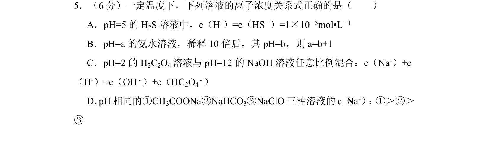
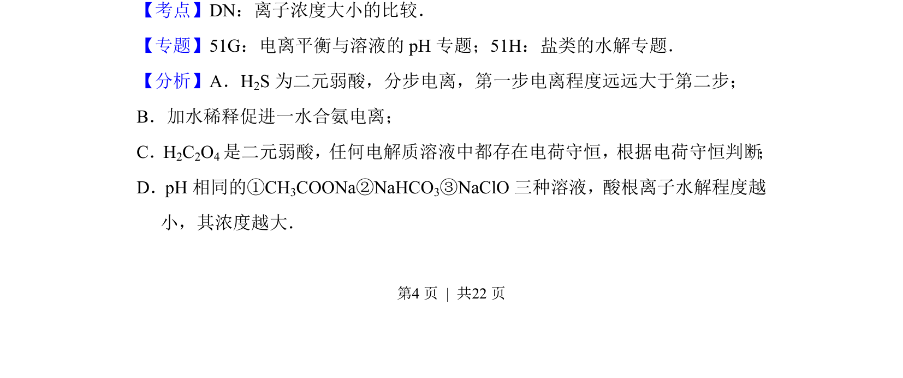
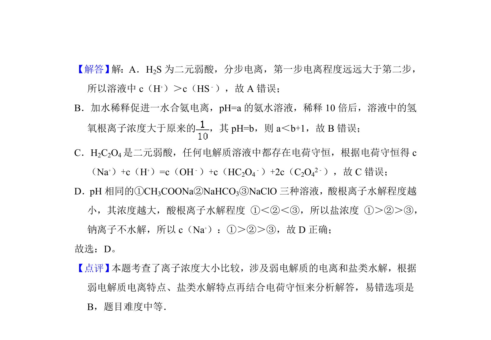

考点：弱电解质电离平衡 盐类水解 离子浓度大小比较 电荷守恒

本题通过离子浓度关系判断，考查弱电解质电离平衡、盐类水解及电荷守恒应用。


📄 原 PDF 第 4 页：
素材/真题/吉林/2008-2024·（吉林）化学高考真题/2014年高考化学试卷（新课标Ⅱ）（解析卷）.pdf
5．（6分）一定温度下，下列溶液的离子浓度关系式正确的是（ ） A．pH=5的H 2S溶液中，c（H +）=c（HS﹣）=1×10﹣5mol•L﹣1 B．pH=a的氨水溶液，稀释10倍后，其pH=b，则a=b+1 C．pH=2的H 2C2O4溶液与pH=12的NaOH溶液任意比例混合：c（Na +）+c （H+）=c（OH﹣）+c（HC2O4 ﹣） D．pH相同的①CH3COONa②NaHCO3③NaClO三种溶液的c（Na+） ： ①＞②＞ ③
【考点】DN：离子浓度大小的比较．菁优网版权所有 【专题】51G：电离平衡与溶液的pH专题；51H：盐类的水解专题． 【分析】A．H2S为二元弱酸，分步电离，第一步电离程度远远大于第二步； B．加水稀释促进一水合氨电离； C．H2C2O4是二元弱酸，任何电解质溶液中都存在电荷守恒，根据电荷守恒判断 ； D．pH相同的①CH 3COONa②NaHCO3③NaClO三种溶液，酸根离子水解程度越 小，其浓度越大．